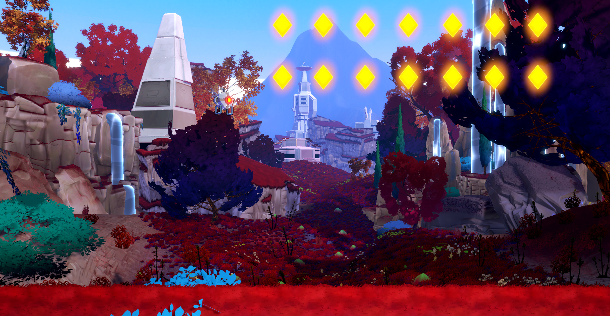

Operation starfall
The Project
The goal of Operation Starfall is to make a multiplayer couch couch co-opin the retro 2D style from the 80's. This project started in
30+
10W (me)
The goal of Operation Starfall is to make a multiplayer couch couch co-opin the retro 2D style from the 80's. This project started in